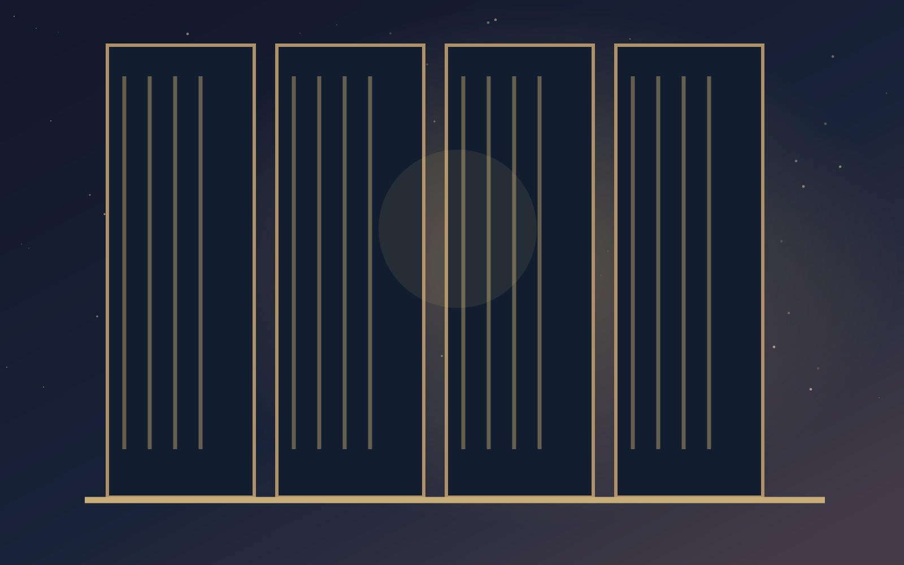

CHAPITRE II - QUAI FANTÔME · MARCHÉ
Le marché des souvenirs

Entre deux trains immobiles, des marchands vendent l’odeur d’un été, le goût d’une pâtisserie d’enfance et des secondes de courage. Une marchande te propose une fiole contenant la première lueur du jour. Mais elle te prévient : « La lumière n’appartient à personne. Elle n’existe que lorsqu’on la partage. » Un gramophone joue au loin des voix perdues.
Tu peux suivre la lueur vers le pont de l’aube ou les voix vers leur source.